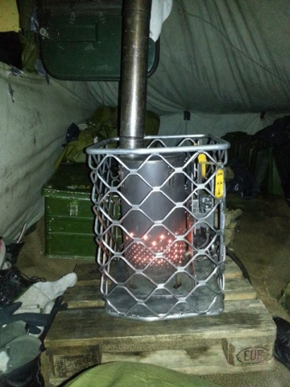
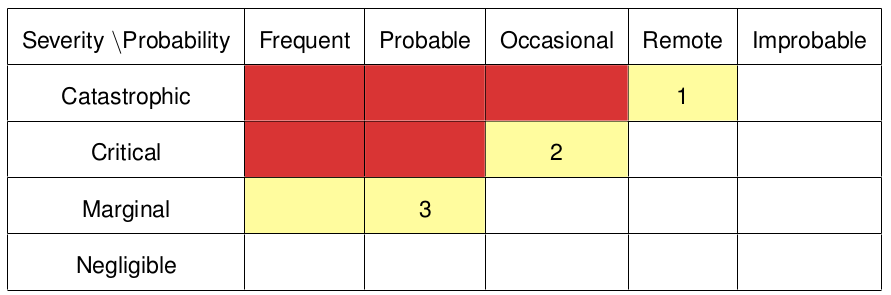
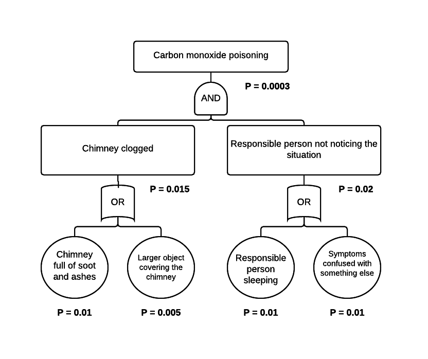
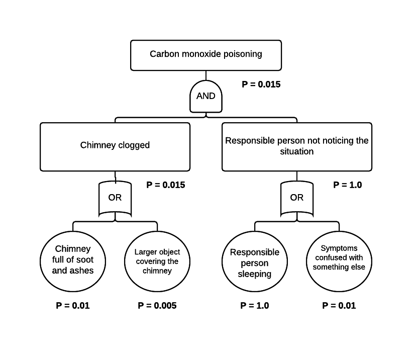

- Long and cold winters in Norway: Workhorse of the Norwegian infantry.
- Keeps a 10-man tent warm.
- Burns several types of fuel, but kerosene normally used.
Procedures and instructions
If the stove is burning fuel, there should at any time be one person inside the tent to make sure the stove operates correctly. The person must always be ready to react in case something happens.
There should always be available at a minimum 1 litre of water right next to the stove in case of fire.
The chimney should be detatched and cleaned with a brush every 24 hours, no matter how many hours the stove has been used for that time period.
Risk 1
The chimney gets clogged by ash, soot, or other. Toxic gases, especially carbon monoxide (CO), will no longer be able to exit the chimney, and will end up contaminating the air in the tent. People inside the tent will inhale these gasses which can lead to injury or death.
Risk 2
The stove gets too close to an object or several objects inside the tent such that a fire starts. The tent may be filled with toxic gasses which can lead to injury or death. Soldiers inside the tent might also suffer severe or fatal burn injuries from the fire.
Risk 3
The multi-fuel stove stops working, resulting in a cold tent. This might lead to frostbite.
Risk assessment matrix

- Carbon monoxide poisoning
- Fire inside tent
- Frostbite
Fault tree analysis (CO poisoning)

So what's the problem?
Management
“I'd rather die than to sit up and watch the multi-fuel stove”
- Second Lieutenant Potetsekk
Fault tree analysis revised

Probability changed from 0.03% to 1.5%
Sensors to detect carbonmonoxide, fire, and temperature
Sensors to detect carbonmonoxide, fire, and temperature
...Murphy's law
Safety day!
Every recruit should attend a safety day. During this day, one should learn the importance of safety and how to report safety violations.